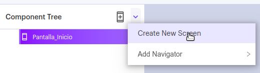
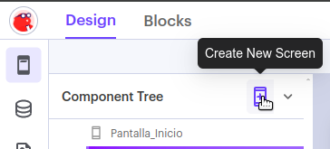
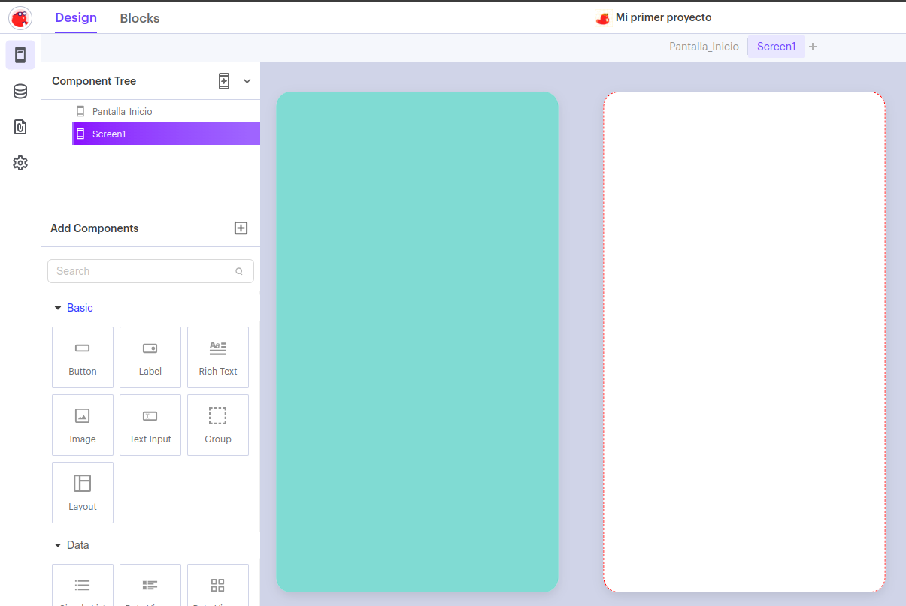

Vamos a crear una nueva pantalla con una imagen y un botón que permita volver a la pantalla de inicio. Para ello, en el árbol de componentes seleccionamos la opción Create New Screen:

Otra opción es pulsar directamente sobre el botón +

En ambos casos, se creará una nueva pantalla junto a la que ya teníamos:
